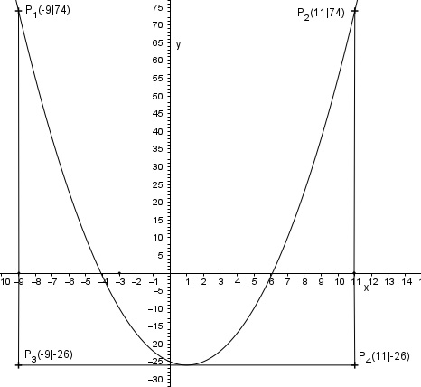

Aufgabe 62 Bestimmen Sie den Scheitelpunkt der Parabel y = x2 - 2x - 25. Wie viel Einheiten über dem Scheitelpunkt liegt eine 20 Einheiten lange Parallele zur x-Achse? Bestimmen Sie die Koordinaten der Punkte, die einen Abstand von 10 Einheiten zur x-Achse haben. Ermittlung der Scheitelpunktform: Quadratische Ergänzung: y = x2 - 2x + 1 – 1 – 25 mit x2 - 2x + 1 = (x - 1)2 y = (x - 1)2 - 26 Abgelesen : S(1|-26) 20 Einheiten lang bedeutet, von der Symmetrieachse der Parabel aus 10 Einheiten nach links bzw. 10 Einheiten nach rechts. 10 Einheiten nach links: x = 1 – 10 = - 9 10 Einheiten nach rechts: x = 1 + 10 = 11 Funktionswert an der Stelle x = - 9 In die Scheitelpunktform eingesetzt: y(-9) = y(11) = (- 9 – 1)2 - 26 = 100 – 26 = 74 Einheiten über der x-Achse Über dem Scheitelpunkt sind es: 74 E + |-26| E = 74 E + 26 E = 100 E. (siehe Graph)  Der Scheitelpunkt liegt 26 Einheiten unterhalb der x-Achse, also muss es oberhalb und unterhalb der x-Achse Punkte geben, die 10 Einheiten von ihr entfernt sind. y kann also entweder –10 oder 10 sein. y = 10 10 = (x – 1)2 -26 10 = x2 - 2x + 1 - 26 |-10 x2 - 2x – 35 = 0 Zerlegung in Linearfaktoren: (x - 7)(x + 5) = 0 weil (-7) * -5 = -35 und -7 + 5 = -2 Lösungen x1 = 7 und x2 = -5 Punktkoordinaten: P1(-5|10) und P2(7|10) y = - 10 -10 = (x – 1)2 -26 -10 = x2 - 2x + 1 - 26 |+10 x2 - 2x – 15 = 0 Zerlegung in Linearfaktoren: (x - 5)(x + 3) = 0 weil (-5) * 3 = -15 und -5 + 3 = -2 Lösungen x3 = 5 und x
4 = -3 Punktkoordinaten: P3(-3|-10) und P4(5|-10)